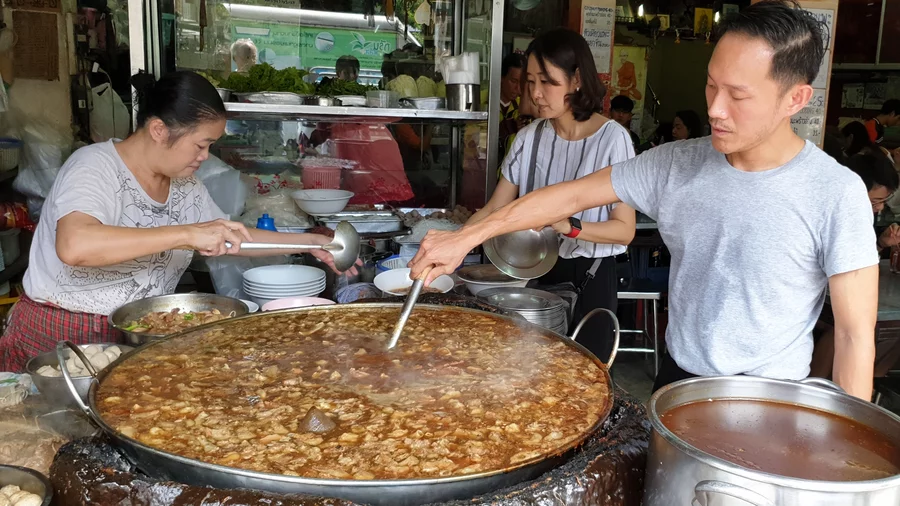
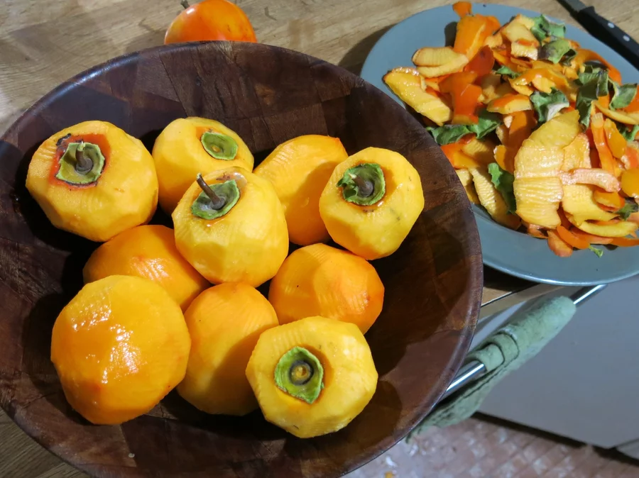

Soup's On! And On! Thai Beef Noodle Brew Has Been Simmering For 45 Years
Nattapong Kaweeantawong, a third-generation owner of Wattana Panich, stirs the soup while his mother (left) helps serve and his wife (center) does other jobs at the restaurant. Nattapong or another family member must constantly stir the thick brew.
There's food that's old. There's food that has gone bad. And then there's soup that has been simmering for 45 years.
In Bangkok, customers can't get enough of the latter at Wattana Panich, a noodle soup joint in the trendy Ekkamai neighborhood, where third-generation owner Nattapong Kaweeantawong wants to clear up what he thinks is a popular misconception about his beef soup.
"Lots of people think we never clean the pot," he says. "But we clean it every evening. We remove the soup from the pot, then keep a little bit simmering overnight."
It's that little bit, he says, that forms the stock of the next day's soup. So, yes, at least a taste of what you put in your mouth is 45 years old and counting.
"Since my grandfather's time, we've never really had a set recipe about how much of each ingredient to put in," Nattapong says. "So the person making the soup will constantly have to taste it to know what needs to be added."
He says some of the ingredients include nearly a dozen Chinese herbs, plus garlic, cinnamon, black pepper and cilantro root. And then there's the beef. He goes through about 150 pounds a day.
"To make it tender, we cook the beef for around seven hours. We put the whole thing into the pot so it absorbs all the flavors," he explains. "Then after three hours, we take it out and cut it into smaller pieces, then cook it for another four hours."
The pot at Wattana Panich sits near the sidewalk along a busy street. The simple restaurant occupies two floors of a shophouse that the family bought decades ago. And a good thing too, Nattapong says. They couldn't afford to even rent here now. The pot itself draws crowds, in part because of its sheer size. About 5 feet in diameter and 2 1/2-feet deep, it brims with chunks of beef bumping into one another as Nattapong or another member of his family constantly stirs the thick, dark brew.
"When I first started in the business, my dad would make the soup and the broth and I would taste it, to understand what the perfect taste is," Nattapong says. "Nowadays, I can just look at it and know what's missing."
Wattana Panich has been a family business for more than 60 years. Nattapong's father and mother still work at the shop, though Nattapong says he calls the shots. As to who makes better soup, the father doesn't hesitate when I pose the question to him while Nattapong tends to a customer. "Of course it's me," he says. "I've been doing it since before he was born.
He says his 12-year-old daughter has expressed interest in taking charge when she's old enough, and he's tired enough to step aside. He hopes that she doesn't change her mind and that she becomes the fourth generation to stir the pot. Who knows? Maybe the soup at Wattana Panich can simmer for even longer.
Ancient Japanese Food Craft Brings Persimmons To American Palates
Beloved in eastern Asia, especially Japan, persimmons get little respect in the United States, where many tree owners don't bother harvesting their crop.
Each autumn, as leaves fall to the ground, persimmon trees emerge from the graying landscape, their orange and red fruits gleaming like gaudy Christmas ornaments. Beloved in eastern Asia — especially Japan — persimmons get little respect in the United States, where many tree owners don't bother harvesting their crop. Many Americans have never tasted a persimmon. But Brock Dolman is an impassioned fan. Every fall he goes foraging for them, and the bounty is almost limitless in rural Sonoma County, Calif., where he lives.
THE RISE OF THE PERSIMMON
There are lots of ways to eat and prepare this fruit. Many varieties, including the fuyu and suruga, are crunchy and can be eaten right off the tree like apples. Others, including the hachiya, saijo and chocolate, are considered astringent varieties. Rich in tannins, they are unpalatable until allowed to ripen to a jelly-soft texture, at which point they can be eaten out of hand or used in baking.
In Japanese, hoshigaki means simply "dried persimmon," yet describes a product of such labor that it has been called the Kobe beef of fruits. To make hoshigaki, producers use twine to suspend peeled persimmons — always of astringent varieties — from bamboo racks, often outdoors in the sun, other times indoors near a fan or over a warm stove. The process can take between one and two months, and every few days caretakers give regular massages to the softening persimmons, which shrivel, turn dark brown and crust over with natural sugar.
DRAWING IN MILLENNIALS
The tradition came to the United States with Japanese immigrants in the 19th and 20th centuries, and it has persisted in a relatively confined cultural circle for decades. Tosh Kuratomi, of Otow Orchard, a major persimmon farm in California, is among those who carried the torch and helped deliver the arcane knowledge of hoshigaki into the age of the Internet.
"It was a struggle to sell them at first," says Rieger, who says his persimmons, because multiple varieties are cross-pollinated, "are the sweetest in the country." But with demand rising, Rieger says, this year he sold out his hoshigaki supply through online orders almost immediately.
A CHALLENGE FOR NEWBIES
For newbies making their first hoshigaki batch, failure rates can be high. Mold can be an issue if the humidity is too high or the temperature is too low. For instance, I tried my own hand at making hoshigaki this fall from persimmons collected in and around Sebastopol, Calif. I used bamboo shoots to make a rack and twine to hang the persimmons. Though my project had the look of authenticity, the fruits did not dry rapidly enough, and as a moldy fuzz began to appear on the fruits, I rescued them from spoilage and finished them in my dehydrator.!
"You're turning a fruit that's totally inedible when it's not ripe into a sweet jewel," says Sakai, whose forthcoming book, Japanese Home Cooking, will include a section on hoshigaki.
2 Comments
Ichigo Zaraki
2d2 replies
Brandon Smith
4d